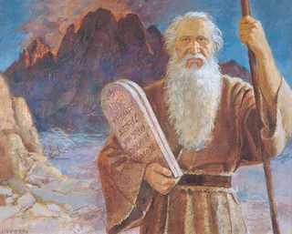
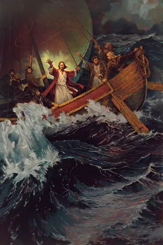

OLD TESTAMENT · 2026
Ancient words.
Your next step.
A place to read, notice, and draw closer to Jesus Christ.
Choose a study below. Bring your questions. Take the time you need.
Latest published studyAmos; Obadiah; Jonah
Open the latest studyTHE STUDY COLLECTION
One week. One invitation.
Open a published student study, or find the official lesson for a week that is not ready yet.
Each picture connects to the principle marked with the seminary icon in the official weekly lesson. Select a featured principle to read it there.
-
November 23–29, 2026 Ready to study
Amos; Obadiah; Jonah
“Seek the Lord, and Ye Shall Live”
Student study: follow Amos’s clues about who sent him, then try one way to respond to Christ’s counsel.
Featured principleThe Lord reveals truth through His prophets. ↗
Moses is one example of God revealing truth through a prophet. Amos 3:7; Exodus 19–20.

Moses and the Tablets — Jerry Harston ↗Church Media Library -
November 16–22, 2026 Ready to study
Hosea 1–6; 10–14; Joel
“I Will Love Them Freely”
Student companion: Joel 2:28 · “I will pour out my spirit upon all flesh.” Quick and deep learning paths.
Featured principle“I will pour out my spirit upon all flesh.” ↗
Moroni quoted Joel’s promise of the Spirit to Joseph Smith. Joseph Smith—History 1:41.
Moroni Appears to Joseph Smith in His Room — Tom Lovell ↗Church Media Library -
November 9–15, 2026 Ready to study
Daniel 1–7
Study Daniel 1, 3, and 6: Faith under pressure.
Featured principleI can trust in the Lord when my faith is tried. ↗
Daniel kept praying when his faith was tested. Daniel 6.
Daniel in the Lions’ Den — Clark Kelley Price ↗Church Media Library -
December 21–27, 2026 Not ready yet
Christmas
“We Have Waited for Him, and He Will Save Us”
Featured principleI rejoice in my Redeemer. ↗
The birth of Jesus Christ brings joy and hope of redemption. Isaiah 25:8–9; Luke 2.
The Nativity — Ted Henninger ↗Church Media Library -
December 14–20, 2026 Not ready yet
Malachi
“I Have Loved You, Saith the Lord”
Featured principleThe Lord opens the windows of heaven as I show my faith by paying tithing. ↗
Tithing is an act of faith in the Lord and His promises. Malachi 3:8–12.
Payment of Tithing — Steve Bunderson ↗Church Media Library -
December 7–13, 2026 Not ready yet
Haggai 1–2; Zechariah 1–4; 7–14
“Holiness unto the Lord”
Featured principle“Consider your ways.” ↗
Making room for the Lord’s house helps us consider our priorities. Haggai 1:5–8.
Provo City Center Temple ↗Church Media Library -
November 30–December 6, 2026 Not ready yet
Micah; Nahum; Habakkuk; Zephaniah
“He Delighteth in Mercy”
Featured principleI can trust the Lord’s will and His timing. ↗
The disciples’ question in the storm invites us to trust the Lord. Mark 4:37–38; Habakkuk 2:3–4.

Stilling the Storm — Ted Henninger ↗Church Media Library
Pictures from the Church Media Library, used for personal, noncommercial study. Image use information ↗
Weeks and lesson titles follow the official 2026 Come, Follow Me calendar ↗. The final listed lesson is Christmas, December 21–27. Your class may meet on a different schedule.